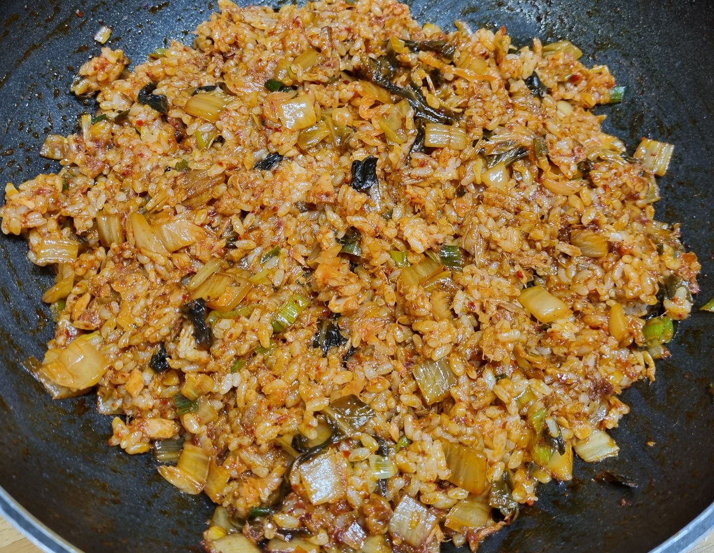

참치김치볶음밥

- 재료
밥 4인분, 묵은지 1/4포기, 참치 1캔, 대파 1개, 다진마늘 1T, 고춧가루 2T, 설탕 1/3T, 양조간장 2T, 계란
- 조리순서
- 묵은지 1/4포기를 잘게 썰고, 대파도 쏭쏭 썰어줍니다.
- 후라이팬을 달구고 식용유를 두 바퀴 뿌린 후 참치와 다진마늘 1T를 넣어 볶습니다.
대파도 넣어서 볶다가, 묵은지와 고춧가루 2T, 설탕 1/3T을 넣고 익혀줍니다.
- 빈 자리에 양조간장 2T를 넣고 전체적으로 섞으면서 볶습니다.
밥을 넣고 열심히 볶아줍니다.
- 계란후라이를 반숙으로 구워서 얹으면 더 맛있습니다.